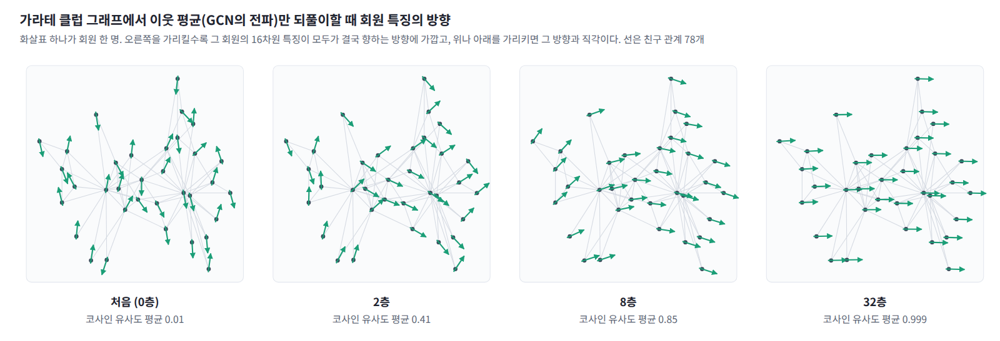
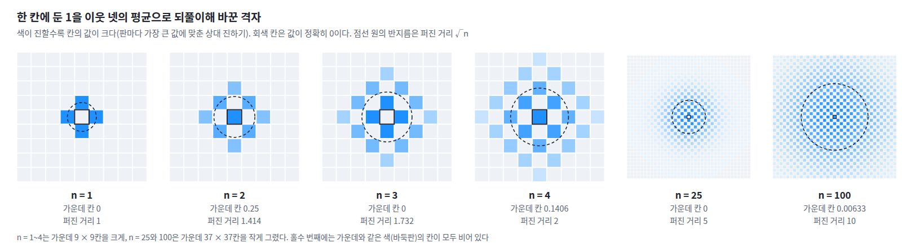
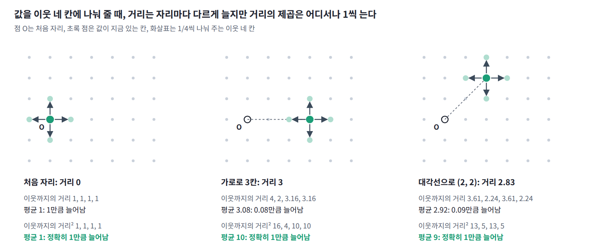

13장 — 열 방정식과 확산
이 장의 물음
그래프 신경망에서 GCN 층을 깊게 쌓으면 이상한 일이 생긴다. 가라테 동호회 회원 34명의 친구 관계 78개로 만든 그래프(자카리의 가라테 클럽)에서 회원마다 16차원 무작위 특징을 주고, 가중치와 비선형 함수는 뺀 채 GCN의 전파 단계, 곧 「자기 자신과 이웃들의 특징을 이웃 수로 정규화해 평균 내기」만 되풀이해 보자. 서로 다른 두 회원의 특징 벡터가 이루는 코사인 유사도는 평균이 처음 0.01이었다가 2층 뒤 0.41, 8층 뒤 0.85, 32층 뒤 0.999가 된다. 층을 쌓을수록 회원들이 서로 구별되지 않을 만큼 닮아 가는 것이다. 리, 한, 우는 2018년 논문에서 이것을 「GCN의 그래프 합성곱은 사실 라플라시안 평활화의 특별한 형태이며, 이것이 GCN이 잘 작동하는 핵심 이유이지만 합성곱 층이 많으면 과평활화의 우려도 낳는다」고 적었다.

생성 모델에서도 비슷한 일이 일어난다. 분산 폭발형 확산 모델은 학습 이미지에 정규분포 잡음을 더하는데, 잡음의 표준편차를 0.01에서 시작해 CIFAR-10에서는 50까지 키운다. 픽셀 값이 0과 1 사이인 이미지에 표준편차 50인 잡음을 더하면 원래 무엇이었는지 알아볼 수 없다. 송과 에르몬(2020)은 가장 큰 잡음을 「학습 데이터 두 점 사이 유클리드 거리의 최댓값만큼」 크게 잡으라고 권했다. 잡음이 커지는 동안 잡음 섞인 이미지들의 분포는 점점 넓고 밋밋해져서, 어떤 데이터에서 출발했든 거의 같은 모양이 된다. 두 경우 모두 무언가가 퍼지면서 차이가 지워진다. 무엇이 어떤 법칙으로 퍼지며, 지워진 차이는 되돌릴 수 있을까?
이 질문은 지금까지의 질문과 종류가 다르다. 볼츠만 분포, 자유에너지, 요동과 응답, 평균장 근사는 모두 계가 충분히 오래 지난 뒤 머무는 분포, 곧 평형에 대한 이야기였고, 그 식들에는 시간 t가 한 번도 나오지 않았다. 평형이 도착점이라면, 이 장부터는 계가 그 도착점까지 가는 길, 곧 시간에 따른 변화를 다룬다. 첫 대상은 가장 단순한 변화인 「고르지 않던 것이 고르게 되어 가는 과정」이고, 이 장은 다음 물음에 차례로 답한다.
- 이웃끼리 평균을 내는 일을 되풀이하면 값은 얼마나 멀리, 어떤 빠르기로 퍼질까?
- 칸을 한없이 잘게 나누고 평균을 한없이 자주 내면 이 규칙은 어떤 방정식이 될까?
- 처음 모양이 복잡하면 그 가운데 무엇이 먼저 지워질까?
- 퍼진 것을 거꾸로 돌려 처음 모양을 되찾을 수 있을까? 곧바로 되돌릴 수 없다면 다른 길은 있을까?
- 층을 깊게 쌓은 GCN과 잡음을 키워 가는 확산 모델에서는 각각 무엇이 어디에서 퍼지고 있을까?
이웃 평균: 퍼진 거리는 횟수의 제곱근
잉크 한 방울을 물에 떨어뜨리면 번져 나가고, 뜨거운 곳의 열은 차가운 쪽으로 번진다. 이렇게 고르지 않던 것이 고르게 되어 가는 과정은 이웃끼리 값을 나누는 일로 흉내 낼 수 있다. 이웃끼리 평균을 내는 일을 되풀이하면 값은 얼마나 멀리, 어떤 빠르기로 퍼질까?
가운데 칸에 둔 1
정사각 격자의 칸마다 수를 하나씩 적는다. 처음에는 가운데 한 칸에만 1을 두고 나머지는 모두 0이다. 한 번 갱신할 때 모든 칸을 동시에 위, 아래, 왼쪽, 오른쪽 이웃 넷의 평균으로 바꾼다.
몇 번 갱신해 보자. 한 번 뒤에는 가운데의 1이 이웃 네 칸에 1/4씩 나뉘고 가운데는 0이 된다. 두 번 뒤에는 가운데가 다시 1/4이 되고, 가운데에서 두 칸 떨어진 칸들에도 값이 생긴다. 얼마나 퍼졌는지는 칸의 값을 가중치로 써서 잰다. 값의 합이 1이므로 칸마다 처음 자리에서 떨어진 거리의 제곱에 그 칸의 값을 곱해 모두 더하면 거리 제곱의 가중 평균이 되고, 그 제곱근을 퍼진 거리라 하자.
| 되풀이 횟수 n | 값의 합 | 퍼진 거리 | 퍼진 거리² ÷ n | 가운데 칸의 값 |
|---|---|---|---|---|
| 1 | 1 | 1.000 | 1 | 0 |
| 2 | 1 | 1.414 | 1 | 0.25 |
| 4 | 1 | 2.000 | 1 | 0.1406 |
| 25 | 1 | 5.000 | 1 | 0 |
| 100 | 1 | 10.000 | 1 | 0.00633 |
| 400 | 1 | 20.000 | 1 | 0.00159 |
세 가지가 눈에 띈다. 첫째, 값의 합은 몇 번을 되풀이해도 정확히 1이다. 평균 내기는 값을 옮길 뿐 만들거나 없애지 않는다. 둘째, 퍼진 거리는 어림이 아니라 정확히 횟수의 제곱근이다. 25번에 5칸, 100번에 10칸, 400번에 20칸이어서, 두 배 멀리 가려면 네 배 오래 되풀이해야 한다. 셋째, 되풀이 횟수가 홀수이면 가운데 칸이 0이다. 칸을 바둑판처럼 두 색으로 칠하면 값은 한 번 갱신할 때마다 한 색의 칸들에서 다른 색의 칸들로 통째로 건너가서, 짝수 번째에는 가운데와 같은 색의 칸에만, 홀수 번째에는 다른 색의 칸에만 값이 있다.

한 번 나눠 줄 때 늘어나는 것
퍼진 거리는 왜 정확히 횟수의 제곱근이며, 칸의 색이 번갈아 비는 것은 무엇을 뜻할까? 이웃 넷의 평균으로 바꾸는 규칙은 거꾸로 보면 모든 칸이 자기 값을 네 등분해 이웃 네 칸에 하나씩 나눠 주는 것과 같다. 위치 x인 칸의 값은 한 번 갱신한 뒤 x + s인 네 칸에 1/4씩 가 있고, 여기서 s는 (1, 0), (−1, 0), (0, 1), (0, −1) 가운데 하나인 한 칸 이동이다. 그러면 거리 제곱의 가중 평균은 다음과 같이 바뀐다.
가운데 항이 사라지는 것이 핵심이다. 네 이동이 좌우와 상하로 대칭이라 평균 이동이 0이므로, 값이 지금 어디에 있든 한 번 나눠 줄 때마다 거리 제곱의 가중 평균은 정확히 1씩 는다. 거리 자체는 가까워지는 쪽과 멀어지는 쪽이 섞여서 한 번에 얼마씩 는다고 말할 수 없지만, 거리의 제곱은 처음 모양과 상관없이 매번 같은 만큼 는다. 그래서 n번 뒤 거리 제곱의 평균은 n이고 퍼진 거리는 √n이다. 교차항이 0이라 제곱만 쌓이는 이 계산은 서로 직각인 두 변으로 빗변을 만들 때 제곱끼리 더해지는 피타고라스 정리와 같다. 한 축만 보면 네 이동 가운데 둘만 그 축으로 움직이므로, 가로 방향의 분산은 한 번에 1/2씩 는다.

종 모양과 게으른 평균
퍼지는 모양도 곧 정해진다. 평균 내기를 여러 번 겹치면 처음 모양과 상관없이 종 모양, 곧 가우시안이 되는데, 동전을 많이 던져 앞면 수를 세면 종 모양 분포가 나오는 것과 같은 이유다. 100번 뒤 가운데 칸의 값 0.00633은, 가로와 세로 분산이 각각 50인 2차원 가우시안에서 칸 하나에 해당하는 값 1/(100π) = 0.00318의 두 배와 거의 같다. 두 배인 까닭은 값이 가운데와 같은 색의 칸, 곧 절반의 칸에만 모여 있기 때문이다. 가운데에서 10칸 떨어진 칸도 0.00235 대 0.00234로 맞는다.
칸의 색이 번갈아 비는 것은 모든 칸이 동시에, 자기 값을 하나도 남기지 않고 이웃에게만 나눠 주기 때문이다. 절반은 제자리에 남기고 절반만 이웃에게 나눠 주는 게으른 평균, 곧 u ← (u + 이웃 넷의 평균)/2로 바꾸면 이런 일이 없다. 한 번에 늘어나는 거리의 제곱이 1/2로 줄어 100번 뒤 퍼진 거리는 √50 = 7.07이고, 가운데 칸의 값 0.006367은 가로와 세로 분산이 각각 25인 가우시안의 값 1/(50π) = 0.006366과 맞는다.
정리하면, 이웃끼리 평균을 내는 규칙은 값의 합을 지키면서, 평균 이동이 0인 한 처음 모양과 상관없이 거리의 제곱을 매번 같은 양만큼 늘린다. 그래서 퍼진 거리는 되풀이 횟수의 제곱근을 따르고, 퍼진 모양은 가우시안이 된다.
ML에서: 블러와 GCN의 전파
이 규칙은 여러 곳에 나온다. 이미지에서 픽셀마다 이웃 픽셀의 평균을 내면 블러가 되고, 그래프에서 노드마다 이웃의 특징을 평균 내면 GCN의 전파가 된다. 2차원 격자의 이징 모형에 평균장 근사를 쓰면 스핀마다 평균 방향이 m ← tanh(βJ × 이웃 넷의 m의 합)으로 갱신되는데, kT = 4J에서 m이 0 근처이면 tanh(x) ≈ x이므로 이 갱신도 정확히 이웃 넷의 평균이 된다.